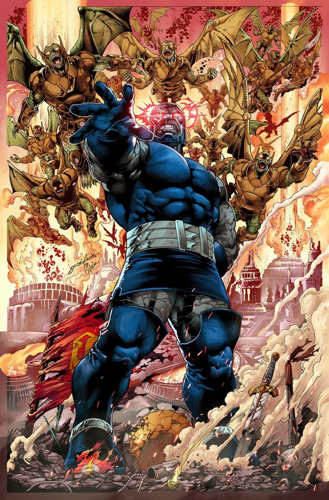

Darkseid es uno de los villanos más poderosos
Creado por Jack Kirby en los años 70 como parte de su saga de los Nuevos Dioses, Darkseid es el gobernante tiránico del planeta Apokolips. Su ambición va más allá del poder físico o político: busca la Ecuación Anti-Vida, una fórmula que le permitiría dominar las voluntades de todos los seres del universo.
Darkseid no solo es fuerte e inmortal, sino que representa la encarnación del control absoluto y la pérdida de libertad. Su presencia genera temor incluso entre los héroes más poderosos. No es simplemente un enemigo más: es un símbolo de opresión, desesperanza y guerra eterna.
Lo que lo diferencia de otros villanos es su escala. Darkseid no destruye por capricho, sino por filosofía. Cree que el libre albedrío es una ilusión y que solo él puede ofrecer orden. Su legado como enemigo de Superman, la Liga de la Justicia y el multiverso entero lo convierte en uno de los antagonistas más emblemáticos del cómic.
← Volver a curiosidades de DC